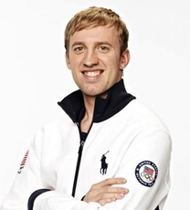
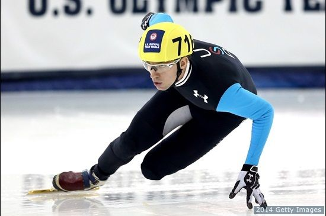
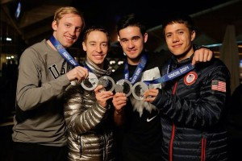
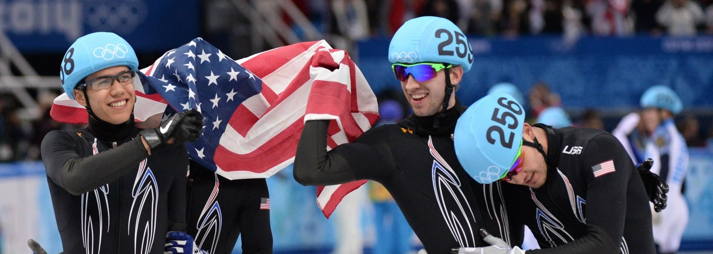
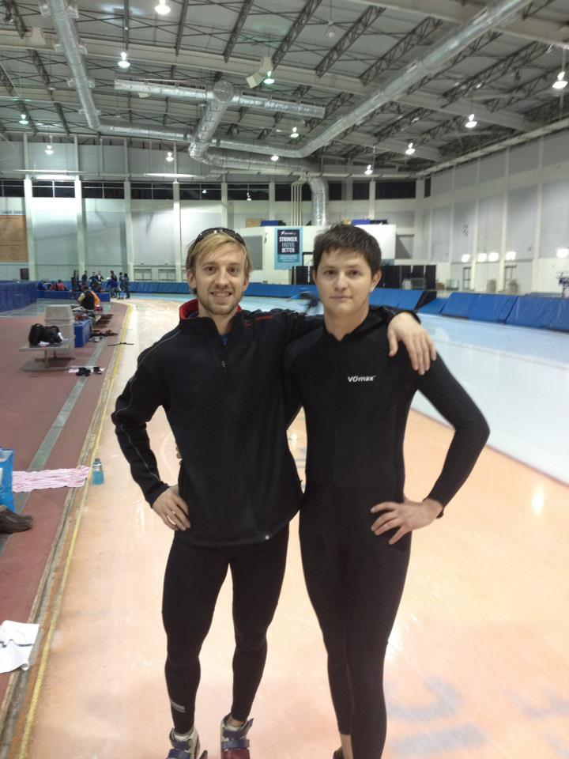

Chris Creveling The Olympian

Chris is a Short Track Speedskater for the US National Team. He has been on the National Teams for the following years:
- 2010
- 2011
- 2012
- 2013
- 2014
- 2015
- 2016
"Follow this link to find More 'Awesome' Images of Chris"
Chris competed in the 2014 Winter Olympics in Sochi Russia!

He competed in 4 total events over the course of the winter games.
- Men's 500M
- Men's 1,000M
- Men's 1,500M
- Men's 5,000M 4 Man Relay
"Follow this link to find More 'Spectacular' Images of Sochi Short Track"
Chris Won a Silver Medal in the Men's 5,000 meter relay along with teamates.

Chris and the other men on the relay had a huge post win celebration! His teammates pictured (from left to right) are as follows:
- Jordan Malone
- Eddie Alvarez
- J.R. Celski
"Follow this link to find More 'Awesome' Images of The Men's Relay Final"
This is so 'MERICA!'

This was a moment captured in time of a very patriotic Team USA. Their were several men and women that Team USA sent to Sochi to compete in Short Track:
- 6 Female Skaters
- 6 Male Skaters
"Follow this link to find out more about US Speedskating"
Did I mention that Chris and I are broskis?

Chris and I have been pals since 2007 and we are roommates.The two handsome dudes pictured above are:
- Chris Creveling
- Rob Johnson
"Follow this link to find out more about what it means to be a 'Broski'"